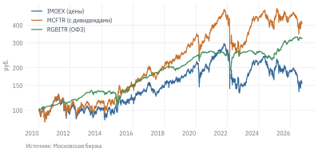
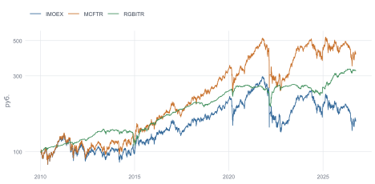
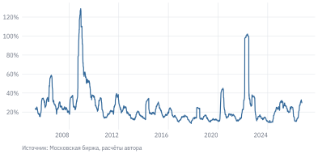
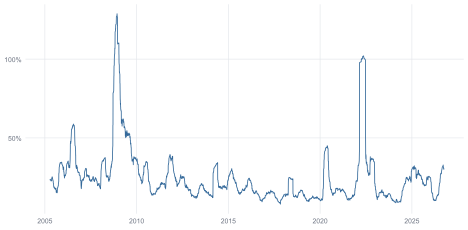
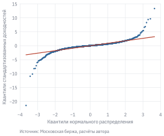
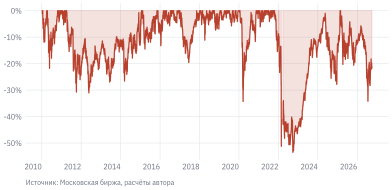
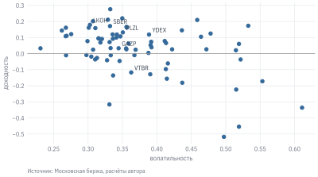

Код
import numpy as np
import pandas as pd
import matplotlib.pyplot as plt
from scipy import stats
from qf import data, plotПредставьте инвестора, который 20.10.2021 вложил деньги в индекс Московской биржи с учётом дивидендов. Через год, 26.09.2022, от вложений осталось меньше половины: индекс опустился на 53,5% от точки входа. Вернуться к исходной сумме удалось только 17.02.2025, спустя 40 месяцев. Хорошее это было вложение или плохое? Какую доходность оно принесло и сколько риска за неё пришлось нести? Что было бы, если бы инвестор вложился на год раньше или на год позже?
Чтобы ответить на такие вопросы, нужен общий язык: способ измерять доходность и риск так, чтобы результаты можно было сравнивать между активами, периодами и стратегиями. Этот язык и есть предмет главы. Мы будем опираться на данные Московской биржи за два десятилетия. За это время российский рынок пережил кризис 2008 г., девальвацию 2014 г., пандемию 2020 г. и шок 2022 г., поэтому примеров того, как ведут себя доходности в спокойные и в кризисные годы, будет достаточно.
Данные: stocks.parquet, indexes.parquet, ruonia.parquet, key_rate.parquet (см. данные книги). Нужно знать: работа с pandas, загрузка данных (глава о финансовых данных).
В примерах главы используются следующие библиотеки и модули книги: data загружает учебные данные, plot задаёт единый стиль графиков.
import numpy as np
import pandas as pd
import matplotlib.pyplot as plt
from scipy import stats
from qf import data, plotАкция Сбербанка в сентябре 2026 г. стоит около 275 руб., акция ВТБ – несколько десятков рублей. Значит ли это, что Сбербанк «дороже»? Нет: цена одной акции зависит от того, на сколько акций разделён капитал компании, и сама по себе ничего не говорит ни о стоимости бизнеса, ни о привлекательности вложения. Инвестора интересует другое – на сколько процентов вырастут или упадут его деньги.
Поэтому почти весь количественный анализ в финансах работает не с ценами, а с доходностями – относительными изменениями стоимости вложения. У доходностей есть и статистическое преимущество. Цены со временем растут и «уходят» в сторону, поэтому их среднее и разброс зависят от выбранного периода. Доходности колеблются вокруг сравнительно устойчивого уровня, и их свойства можно изучать и сравнивать между периодами.
Пусть \(P_t\) – цена актива на закрытие дня \(t\). Простая доходность за день – это относительное изменение цены:
\[ R_t = \frac{P_t - P_{t-1}}{P_{t-1}} = \frac{P_t}{P_{t-1}} - 1. \tag{4.1}\]
Если акция стоила 100 руб. и подорожала до 103 руб., простая доходность равна 3%. Именно её инвестор видит в отчёте брокера. Ей удобно пользоваться для портфелей: доходность портфеля равна взвешенной сумме доходностей входящих в него активов, где веса – доли вложенных денег.
Но у простой доходности есть неудобное свойство: она несимметрична. Падение на 50% не компенсируется ростом на 50% – после такой пары движений от 100 руб. останется 75. Чтобы вернуться к исходному уровню после падения на 50%, нужен рост на 100%.
Российский рынок дал наглядный пример этой асимметрии. В 2008 г. индекс полной доходности MCFTR упал на 66,6%, а в 2009 г. вырос на 126,1%. Кажется, что рост с лихвой перекрыл падение. На деле за два года инвестор потерял 24,5%: чтобы отыграть падение 2008 г., индексу нужно было вырасти на 199%.
Эту асимметрию устраняет логарифмическая (непрерывно начисляемая) доходность:
\[ r_t = \ln \frac{P_t}{P_{t-1}} = \ln(1 + R_t). \tag{4.2}\]
Её главное свойство – аддитивность во времени. Доходность за несколько дней равна сумме дневных лог-доходностей, потому что логарифм произведения равен сумме логарифмов:
\[ \ln \frac{P_T}{P_0} = \ln \frac{P_1}{P_0} + \ln \frac{P_2}{P_1} + \dots + \ln \frac{P_T}{P_{T-1}} = \sum_{t=1}^{T} r_t. \]
Падение с 100 до 50 руб. – это лог-доходность \(\ln 0{,}5 \approx -0{,}693\), а рост с 50 до 100 руб. – ровно \(+0{,}693\). Сумма равна нулю, как и должно быть. Поэтому модели временных рядов, которые мы будем строить в следующих главах, почти всегда работают с лог-доходностями.
При небольших изменениях цены две доходности почти совпадают: \(\ln(1 + R) \approx R\), когда \(R\) мало. Для дневных доходностей разница обычно видна лишь в четвёртом знаке после запятой. Но для крупных движений она существенна: падение на 33% – это лог-доходность около \(-0{,}40\).
| Свойство | Простая \(R_t\) | Логарифмическая \(r_t\) |
|---|---|---|
| Доходность за несколько периодов | \(\prod (1 + R_t) - 1\) | \(\sum r_t\) – простая сумма |
| Доходность портфеля | \(\sum w_i R_{i,t}\) – взвешенная сумма | не складывается по активам |
| Нижняя граница | \(-100\%\) | \(-\infty\) |
| Где применять | портфели, отчётность, интерпретация | модели временных рядов, агрегирование во времени |
Из таблицы следует правило, которое пригодится во всей книге: складываем во времени – логарифмические, складываем по активам – простые. Перейти от одной доходности к другой можно по формулам \(r = \ln(1+R)\) и \(R = e^r - 1\).
Посчитаем обе доходности для акций Сбербанка. Метод pct_change() возвращает простую доходность, а разность логарифмов цен – логарифмическую.
sber = data.load_stocks("SBER", start="2024-01-01").set_index("date")
sber["R"] = sber["adj_close"].pct_change() # простая доходность
sber["r"] = np.log(sber["adj_close"]).diff() # логарифмическая
sber[["adj_close", "R", "r"]].tail()
#> adj_close R r
#> date
#> 2026-09-23 280.74 -0.000036 -0.000036
#> 2026-09-24 279.33 -0.005022 -0.005035
#> 2026-09-25 276.35 -0.010668 -0.010726
#> 2026-09-28 272.45 -0.014113 -0.014213
#> 2026-09-29 274.65 0.008075 0.008042Первая строка любого ряда доходностей пустая (NaN): для первого дня нет предыдущей цены. В обычные дни столбцы R и r различаются лишь в четвёртом знаке.
close или adj_close
В коде выше мы взяли не цену закрытия close, а столбец adj_close. Почему?
Допустим, вы купили акцию за 317 руб. накануне дивидендной отсечки. На следующий день цена упала до 296 руб., но на ваш счёт придёт дивиденд 33 руб. Потеряли вы или заработали? Если смотреть только на цену – потеряли 7%. Если учесть дивиденд – заработали: \(296 + 33 = 329\) руб. против вложенных 317.
С 31 июля 2023 г. сделки с акциями на Мосбирже рассчитываются в режиме T+1, поэтому экс-дивидендная дата совпадает с датой закрытия реестра. До этого, при расчётах T+2, она наступала на торговый день раньше.
Именно это происходит в день, когда акция начинает торговаться без права на дивиденд (экс-дивидендная дата): цена падает примерно на размер выплаты. Для акционера это не убыток – деньги просто переходят из цены акции на его счёт. Но доходность, посчитанная по close, покажет в этот день провал.
Поэтому для доходностей используют скорректированную цену adj_close. Все цены до экс-даты умножаются на коэффициент \(1 - D/P\), где \(D\) – дивиденд, а \(P\) – цена закрытия накануне. После такой корректировки доходность в день отсечки отражает полный результат акционера: изменение цены плюс дивиденд. Аналогично цены корректируются на сплиты. Подробно корректировка разобрана в главе о подготовке данных.
11 июля 2024 г. – экс-дивидендная дата Сбербанка: дивиденд 33,30 руб. на акцию при цене около 317 руб. накануне. Какой будет доходность за этот день по close и по adj_close? Запишите оценку, потом запустите код.
ex = data.load_stocks("SBER", start="2024-07-09", end="2024-07-12").set_index("date")
ex["R_close"] = ex["close"].pct_change()
ex["R_adj"] = ex["adj_close"].pct_change()
ex[["close", "adj_close", "R_close", "R_adj"]].round(4)
#> close adj_close R_close R_adj
#> date
#> 2024-07-09 319.99 221.4367 NaN NaN
#> 2024-07-10 316.68 219.1461 -0.0103 -0.0103
#> 2024-07-11 295.87 228.8050 -0.0657 0.0441
#> 2024-07-12 292.21 225.9746 -0.0124 -0.0124По close получается −6,6% – будто акция резко упала. По adj_close доходность 4,4%: цена снизилась меньше, чем на размер дивиденда, и с учётом выплаты акционер в тот день заработал.
Скорректированная цена устраняет технический эффект выплаты, но не отменяет реальных новостей о дивидендах. Хороший контрпример – Газпром. 30 июня 2022 г. годовое собрание акционеров отказалось от выплаты дивидендов за 2021 г., которые рынок уже заложил в цену. В этот день акции упали на 30,5%, и adj_close показывает то же падение: дивиденда не было, корректировать нечего. Инвесторы действительно потеряли эти деньги.
Для российского рынка вопрос о дивидендах особенно важен. Многие крупные компании, прежде всего с государственным участием, платят высокие дивиденды, и значительная часть дохода акционера приходит в виде выплат, а не роста цены.
Посмотрим, как это отражается на индексах. Индекс Мосбиржи IMOEX – ценовой: он показывает только изменение цен входящих в него акций. Индекс MCFTR состоит из тех же акций, но это индекс полной доходности: в нём дивиденды реинвестируются, то есть как будто сразу направляются на покупку акций. Для сравнения возьмём индекс полной доходности гособлигаций RGBITR.
ix = (data.load_index(["IMOEX", "MCFTR", "RGBITR"], start="2010-01-01")
.pivot(index="date", columns="ticker", values="close"))
years = (ix.index[-1] - ix.index[0]).days / 365.25
cagr = (ix.iloc[-1] / ix.iloc[0]) ** (1 / years) - 1 # среднегодовой темп роста
cagr.round(4)
#> ticker
#> IMOEX 0.0271
#> MCFTR 0.0886
#> RGBITR 0.0724
#> dtype: float64Чтобы сравнивать рост за разные сроки, мы пересчитали его в среднегодовой темп роста (CAGR, compound annual growth rate). Это такая постоянная годовая доходность, которая за тот же срок дала бы тот же итоговый результат:
\[ \text{CAGR} = \left(\frac{P_T}{P_0}\right)^{1/T} - 1, \tag{4.3}\]
где \(T\) – срок в годах. CAGR не означает, что каждый год доходность была такой: реальные годовые доходности сильно колебались вокруг неё.
growth100 = 100 * ix / ix.iloc[0]
ax = growth100.plot(logy=True, rot=0)
ax.minorticks_off() # без промежуточных делений
ax.set_yticks([100, 150, 200, 300, 400], labels=["100", "150", "200", "300", "400"])
ax.set_xlabel("")
ax.set_ylabel("руб.")
ax.legend(["IMOEX (цены)", "MCFTR (с дивидендами)", "RGBITR (ОФЗ)"])
plot.source(ax, "Московская биржа")
plt.show()

Обратите внимание на логарифмическую шкалу по вертикали. На ней одинаковые относительные изменения выглядят одинаково: рост со 100 до 200 руб. занимает столько же места, сколько рост с 200 до 400. Для длинных рядов цен это почти всегда правильный выбор – на обычной шкале ранние годы сжимаются в линию у оси.
С 11.01.2010 по 29.09.2026 ценовой индекс IMOEX рос в среднем на 2,7% в год, а индекс полной доходности MCFTR – на 8,9%. Разница в 6,1 процентного пункта в год – это вклад реинвестированных дивидендов. За весь период она накопилась в большой разрыв: 100 руб. в MCFTR превратились в 413 руб., а в IMOEX – лишь в 156 руб. Большую часть дохода российского инвестора в акции за эти годы составили дивиденды. Заметьте и то, что индекс гособлигаций RGBITR рос в среднем на 7,2% в год при гораздо меньших колебаниях.
Сравнивать стратегию, которая получает дивиденды, с ценовым индексом IMOEX. Такое сравнение завышает превосходство стратегии на несколько процентных пунктов в год. Бенчмарком для российских акций служит индекс полной доходности MCFTR или MCFTRR – вариант с учётом налога на дивиденды для российских инвесторов.
Когда говорят о «средней доходности», часто имеют в виду разные вещи. Посчитаем годовые доходности MCFTR и сравним два вида среднего.
annual = mcftr_all.resample("YE").last().pct_change().loc["2004":"2025"]
arith = annual.mean() # арифметическое среднее
geom = (1 + annual).prod() ** (1 / len(annual)) - 1 # геометрическое = CAGR
pd.Series({"арифметическое": arith, "геометрическое": geom,
"волатильность": annual.std()}).round(4)
#> арифметическое 0.1993
#> геометрическое 0.1283
#> волатильность 0.4014
#> dtype: float64За 22 полных года с 2004 по 2025 г. арифметическое среднее годовых доходностей составило 19,9%, а геометрическое (фактический среднегодовой рост) – только 12,8%. Разница возникает из-за колебаний: как мы видели на примере 2008–2009 гг., потери и приросты одинаковой величины не компенсируют друг друга. Чем выше волатильность, тем больше разрыв. Приближённо
\[ \bar R_{\text{геом}} \approx \bar R_{\text{арифм}} - \frac{\sigma^2}{2}, \tag{4.4}\]
что даёт 11,9%. Приближение грубое, потому что годовые доходности российского рынка очень велики по модулю, но направление и порядок эффекта оно передаёт верно. Эту разницу называют потерями от волатильности (volatility drag).
Какое среднее правильное? Оба, но для разных вопросов. Геометрическое отвечает на вопрос «как в среднем росли деньги инвестора за прошлые годы». Арифметическое – лучшая оценка ожидаемой доходности одного следующего года. Путать их опасно: в рекламе инвестиционных продуктов иногда приводят арифметическое среднее, которое выглядит привлекательнее.
Доходность всегда измеряется в какой-то валюте, и для российского инвестора это различие бывает решающим. У индекса Мосбиржи есть «двойник» – индекс RTSI, который рассчитывается по тем же акциям, но в долларах.
Хорошо это видно на событиях декабря 2014 г. В ночь на 16 декабря Банк России повысил ключевую ставку с 10,5% до 17%, пытаясь остановить обвал рубля. В этот день IMOEX вырос на 1,4%, а RTSI упал на 12,4%. Цены акций в рублях почти не изменились, но сами рубли резко подешевели, и для инвестора, считающего в долларах, это был один из худших дней десятилетия. Индекс гособлигаций RGBITR в тот же день потерял 8,7%: при резком росте ставок цены облигаций падают. Эту связь мы разберём в главе об облигациях.
Доходность – только половина картины. Два актива с одинаковой средней доходностью могут вести себя совершенно по-разному: один растёт ровно, другой то взлетает, то падает. Второй рискованнее: у него выше шанс оказаться в плохом положении в тот момент, когда деньги понадобятся. Главная мера такого риска в финансах – волатильность, стандартное отклонение доходностей:
\[ \sigma = \sqrt{\frac{1}{n-1}\sum_{t=1}^{n}(r_t - \bar r)^2}. \tag{4.5}\]
Волатильность показывает, насколько сильно доходности обычно отклоняются от своего среднего. Если бы доходности были распределены нормально, примерно в двух случаях из трёх доходность попадала бы в интервал \(\bar r \pm \sigma\) и в 95% случаев – в интервал \(\bar r \pm 2\sigma\).
Число торговых дней на Мосбирже в разные годы немного различается, поэтому для годового пересчёта используют условное значение 252 – так же, как на большинстве мировых рынков.
Волатильность считают по дневным данным, но приводят в годовом выражении, чтобы её можно было сопоставлять с годовой доходностью. Дневную волатильность умножают на \(\sqrt{252}\) – примерно столько торговых дней в году:
\[ \sigma_{\text{год}} = \sigma_{\text{день}} \sqrt{252}. \tag{4.6}\]
Откуда корень? Если дневные доходности независимы, дисперсия их суммы равна сумме дисперсий. За 252 дня дисперсия вырастает в 252 раза, а стандартное отклонение – в \(\sqrt{252}\) раз. Если доходности зависимы – например, за ростом чаще следует рост, – правило даёт лишь приближение. Для месячных данных множитель равен \(\sqrt{12}\), для недельных – \(\sqrt{52}\).
r = np.log(ix).diff().dropna()
vol = r.std() * np.sqrt(252)
vol.round(3)
#> ticker
#> IMOEX 0.237
#> MCFTR 0.237
#> RGBITR 0.076
#> dtype: float64Годовая волатильность индекса акций MCFTR с 2010 г. – 23,7%, индекса гособлигаций RGBITR – 7,6%. На языке инвестора это значит: при волатильности около 24% год, в котором индекс акций отклонится от своей средней доходности на 20–25 процентных пунктов в любую сторону, – обычное дело, а не исключение.
Одно число за полтора десятилетия скрывает важную деталь: риск не постоянен. Посчитаем волатильность в скользящем окне из 63 торговых дней – примерно квартала – и посмотрим, как она менялась.
imoex = data.load_index("IMOEX", start="2005-01-01").set_index("date")["close"]
r_imoex = np.log(imoex).diff().dropna()
roll_vol = r_imoex.rolling(63).std() * np.sqrt(252)
ax = roll_vol.plot(color="#34699A", rot=0)
ax.set_xlabel("")
ax.yaxis.set_major_formatter(plt.FuncFormatter(lambda y, _: f"{y:.0%}"))
plot.source(ax, "Московская биржа, расчёты автора")
plt.show()
qf_load_index("IMOEX", start = "2005-01-01") |>
arrange(date) |>
mutate(
r = log(close / lag(close)),
vol = zoo::rollapply(r, 63, sd, fill = NA, align = "right") * sqrt(252)
) |>
ggplot(aes(date, vol)) +
geom_line(colour = "#34699A") +
scale_y_continuous(labels = scales::percent) +
labs(x = NULL, y = NULL)
На графике хорошо видны кластеры волатильности: долгие спокойные периоды сменяются короткими бурными, и большие движения цен следуют за большими, а малые – за малыми. Пики легко связать с событиями: осень 2008 г., декабрь 2014 г., март 2020 г., февраль 2022 г. Вот пять худших дней IMOEX с 2005 г.:
worst = (np.exp(r_imoex) - 1).nsmallest(5)
worst.to_frame("доходность").round(3)
#> доходность
#> date
#> 2022-02-24 -0.333
#> 2008-10-06 -0.187
#> 2008-09-16 -0.175
#> 2008-10-08 -0.144
#> 2008-10-24 -0.142Из пяти худших дней 4 пришлись на осень 2008 г., когда биржа несколько раз приостанавливала торги из-за обвала котировок. Кластеризация волатильности – одно из самых устойчивых эмпирических свойств финансовых рядов: она наблюдается на всех рынках и во все периоды (Cont 2001 г.). Практический вывод: волатильность, посчитанная за спокойный год, плохо описывает риск в кризис. В главе о волатильности мы построим модели GARCH, которые учитывают, что сегодняшний риск зависит от вчерашних движений.
Во многих финансовых моделях – от классической теории портфеля до формулы Блэка – Шоулза – предполагается, что доходности распределены нормально. Это удобно: нормальное распределение полностью описывается средним и дисперсией, и для него хорошо известны вероятности любых отклонений. Проверим, насколько это допущение соответствует данным.
Самый наглядный способ – QQ-график (quantile-quantile plot). По горизонтали на нём откладываются квантили нормального распределения, по вертикали – квантили наших доходностей, приведённых к нулевому среднему и единичному стандартному отклонению. Если данные нормальны, точки ложатся на прямую.
fig, ax = plt.subplots(figsize=(4.2, 3.2))
stats.probplot(z, dist="norm", plot=ax)
ax.get_lines()[0].set(marker=".", markersize=3, color="#34699A")
ax.get_lines()[1].set(color="#B8412E")
ax.set_title("")
ax.set_xlabel("Квантили нормального распределения")
ax.set_ylabel("Квантили стандартизованных доходностей")
plot.source(ax, "Московская биржа, расчёты автора", offset=32)
plt.show()
В центре точки действительно лежат на прямой: обычные дни неплохо описываются нормальным распределением. Но на концах они резко уходят от неё – вниз слева и вверх справа. Это значит, что крайние доходности встречаются гораздо чаще, чем предсказывает нормальное распределение. Такие распределения называют распределениями с тяжёлыми хвостами.
Насколько чаще? При нормальном распределении движение сильнее 4 стандартных отклонений – редчайшее событие: оно должно случаться в среднем раз в 63 года. Из 5 418 торговых дней IMOEX с 2005 г. таких движений было 39, а нормальное распределение ожидает около 0,3. Худший день – 24.02.2022, когда индекс упал на 33,3%, – это отклонение от среднего на 21 стандартное отклонение. С точки зрения нормального распределения такое событие практически невозможно, а на реальном рынке оно произошло.
Мера тяжести хвостов – коэффициент эксцесса (kurtosis). У нормального распределения избыточный эксцесс равен нулю, а у дневных доходностей IMOEX он составляет 58,6. Модели, которые опираются на нормальность, систематически недооценивают вероятность больших потерь. К этому мы вернёмся в главе о VaR и Expected Shortfall.
После 25 февраля 2022 г. торги акциями на Мосбирже были остановлены и возобновились только 24 марта. Здесь подстерегают две ошибки.
Во-первых, diff() посчитает изменение цены между 25 февраля и 24 марта как доходность одного дня, хотя на самом деле это доходность за месяц.
Во-вторых, облигации начали торговаться раньше акций, с 21 марта. Если в одной таблице есть и индекс акций, и индекс облигаций, то в дни 21–23 марта у индекса акций будут пропуски. Метод pct_change() в pandas 2.x по умолчанию заполняет пропуски предыдущим значением и вернёт в эти дни нулевую доходность, будто рынок работал, а цены не менялись. Чтобы этого не случилось, передавайте pct_change(fill_method=None) или считайте доходности через np.log(prices).diff().
Перед любыми расчётами проверяйте разрывы в датах: prices.index.to_series().diff().dt.days.max().
Волатильность – удобная мера, но у неё есть недостаток: она одинаково «наказывает» и неожиданный рост, и неожиданное падение. Инвестора же рост не беспокоит. Его волнует другое: сколько он может потерять, если купит в неудачный момент, и сколько времени придётся ждать восстановления. На эти вопросы отвечает просадка (drawdown) – падение стоимости от предыдущего максимума:
\[ DD_t = \frac{P_t}{\max_{s \le t} P_s} - 1. \tag{4.7}\]
Просадка всегда неположительна: она равна нулю в дни новых максимумов и отрицательна в остальное время. Наихудшее значение за период – максимальная просадка (maximum drawdown) – показывает результат самого неудачливого инвестора, купившего на пике.
mcftr = ix["MCFTR"]
dd = mcftr / mcftr.cummax() - 1
ax = dd.plot(color="#B8412E", rot=0)
ax.fill_between(dd.index, dd, 0, color="#B8412E", alpha=0.15)
ax.set_xlabel("")
ax.yaxis.set_major_formatter(plt.FuncFormatter(lambda y, _: f"{y:.0%}"))
plot.source(ax, "Московская биржа, расчёты автора")
plt.show()
График показывает, что индекс большую часть времени – 94% торговых дней – находился ниже своего предыдущего максимума. Для рынка акций это нормальное состояние, а не исключение. Максимальная просадка MCFTR с 2010 г. – 53,5% (26.09.2022). Это тот самый эпизод из начала главы: инвестор, купивший индекс на пике осени 2021 г., потерял больше половины вложений даже с учётом дивидендов и ждал восстановления больше трёх лет. Кризис 2008 г. был ещё глубже: тогда просадка MCFTR достигла 73,6%. На последнюю дату в данных индекс находится на 21,4% ниже своего максимума.
Максимальная просадка – популярная мера в управлении активами, но она определяется одним-единственным эпизодом. Две стратегии с одинаковой максимальной просадкой могут сильно различаться тем, как часто и надолго они уходят в минус. Поэтому её дополняют длительностью просадок и их средней глубиной.
До сих пор мы смотрели на индексы. Теперь сопоставим среднюю доходность и волатильность отдельных акций из набора данных книги за последние 10 лет. Возьмём только бумаги, у которых есть хотя бы пять лет истории, чтобы оценки не были слишком шумными.
prices = data.load_prices(start="2016-01-01")
rets = np.log(prices).diff()
enough = rets.count() >= 252 * 5 # не менее 5 лет истории
summary = pd.DataFrame({
"доходность": rets.loc[:, enough].mean() * 252,
"волатильность": rets.loc[:, enough].std() * np.sqrt(252),
})
ax = summary.plot.scatter(x="волатильность", y="доходность", color="#34699A")
for t in ["SBER", "GAZP", "LKOH", "YDEX", "VTBR", "PLZL"]:
if t in summary.index:
ax.annotate(t, summary.loc[t, ["волатильность", "доходность"]],
xytext=(4, 3), textcoords="offset points", fontsize=8)
ax.axhline(0, color="#999999", lw=0.8)
plot.source(ax, "Московская биржа, расчёты автора", offset=32)
plt.show()
Из учебников по финансам известен принцип: чем выше риск, тем выше должна быть ожидаемая доходность, иначе инвестор не стал бы брать риск на себя. На графике мы видим обратное. Корреляция между волатильностью и средней доходностью по 74 акциям равна −0,45: более волатильные акции в среднем приносили меньше. У 23 бумаг средняя лог-доходность за период отрицательна, и среди них много самых волатильных.
Означает ли это, что теория неверна? Не обязательно, и у результата есть три объяснения. Первое – механическое. Мы усредняли логарифмические доходности, а средняя лог-доходность примерно на \(\sigma^2/2\) меньше средней простой доходности (вспомните формулу 4.4). Для акции с волатильностью 50% эта поправка составляет 12,5 процентного пункта в год, так что волатильные бумаги «наказываются» уже самим способом расчёта.
Второе – статистическое. Средняя доходность за 10 лет – очень неточная оценка ожидаемой доходности: при волатильности 30–40% в год её стандартная ошибка составляет порядка 10 процентных пунктов.
Третье – содержательное. Теория говорит, что рынок вознаграждает не любую волатильность, а только ту её часть, которую нельзя убрать диверсификацией. Значительная часть колебаний отдельной акции связана с новостями самой компании и гасится в портфеле. Эту идею формализует модель CAPM, которую мы разберём в главе о портфелях.
В наборе данных книги есть и бумаги, которые уже не торгуются на бирже, – 25 компаний. Если бы мы взяли только акции, которые торгуются сегодня, то незаметно исключили бы часть неудачников и завысили бы среднюю доходность рынка. Эта ошибка называется ошибкой выжившего (survivorship bias). Подробнее о ней – в главе о подготовке данных.
Допустим, одна стратегия принесла 15% годовых при волатильности 30%, а другая – 12% при волатильности 10%. Какая лучше? Ответ зависит от того, что можно было получить без риска. Если депозит приносил 11%, первая стратегия дала 4 процентных пункта сверх него, но за очень большой риск, а вторая – 1 пункт за небольшой.
Эту логику формализует коэффициент Шарпа (Sharpe 1966 г.) – избыточная доходность сверх безрисковой ставки в расчёте на единицу риска:
\[ SR = \frac{\mathbb{E}[R - R_f]}{\sigma(R - R_f)}. \tag{4.8}\]
Числитель показывает, сколько инвестор получает за то, что берёт на себя риск, знаменатель – сколько этого риска. Коэффициент Шарпа не зависит от кредитного плеча: если удвоить вложения в рискованный актив за счёт заёмных денег по безрисковой ставке, и избыточная доходность, и волатильность вырастут вдвое, а их отношение не изменится.
RUONIA (Ruble OverNight Index Average) – средневзвешенная ставка по однодневным рублёвым межбанковским кредитам. Ставку публикует Банк России; её история с 2010 г. есть в данных книги (ruonia.parquet).
В России выбор безрисковой ставки особенно важен, потому что она высокая и сильно менялась. В качестве \(R_f\) возьмём ставку RUONIA – ставку однодневных межбанковских кредитов, которую рассчитывает Банк России. Её доходность близка к доходности фондов денежного рынка, доступных любому частному инвестору.
ruonia = data.load_ruonia(start="2011-01-01").set_index("date")["rate"]
# Дневная безрисковая доходность: ставка RUONIA начисляется за календарные дни
# до следующей даты, в которую есть цена индекса.
px = ix.loc["2011-01-01":, ["MCFTR", "RGBITR"]].dropna()
rf_rate = ruonia.reindex(px.index, method="ffill") / 100
days = px.index.to_series().diff().dt.days
rf = (1 + rf_rate.shift(1) * days / 365) - 1
excess = px.pct_change().sub(rf, axis=0).dropna()
sharpe = excess.mean() / excess.std() * np.sqrt(252)
sharpe.round(2)
#> ticker
#> MCFTR 0.05
#> RGBITR -0.29
#> dtype: float64Разберём код. Ставка RUONIA публикуется в процентах годовых, поэтому мы делим её на 100 и на 365 и умножаем на число календарных дней между соседними торговыми датами: деньги на денежном рынке приносят доход и в выходные. Сдвиг shift(1) означает, что доход за период определяется ставкой, известной в его начале. Затем из дневной доходности индекса вычитается безрисковая доходность, а отношение среднего к стандартному отклонению переводится в годовое выражение умножением на \(\sqrt{252}\).
С 2011 г. безрисковая ставка в среднем давала около 9,9% в год. На этом фоне коэффициент Шарпа индекса акций MCFTR составил всего 0,05, а у индекса ОФЗ RGBITR он и вовсе отрицательный: −0,29. Для сравнения: для американского рынка акций за длинные периоды этот коэффициент составляет около 0,3–0,4. Российский рынок акций за эти годы почти не вознаграждал инвестора за риск сверх того, что давал денежный рынок, а длинные ОФЗ в среднем ему проигрывали: ставки несколько раз резко повышались, и цены облигаций падали.
Особенно наглядно это проявилось в 2024 г. Банк России повышал ключевую ставку, пока она не достигла 21% (28.10.2024). Индекс MCFTR за 2024 г. принёс 1,6%, а вложения по ставке RUONIA – 18,9%. Инвестор, который весь год держал деньги в фонде денежного рынка, заработал намного больше владельца акций и не пережил ни одного дня падения стоимости.
Коэффициент Шарпа – самая распространённая мера доходности с поправкой на риск, и мы будем использовать его при сравнении портфелей и стратегий. Но он наследует слабости волатильности: не различает рост и падение и плохо отражает риск редких крупных потерь. Поэтому его дополняют просадками и мерами хвостового риска.
Упражнения разделены на четыре типа. Задания А проверяют понимание и решаются без компьютера. Задания Б выполняются на данных вашей акции (тикер назначает преподаватель), поэтому готового ответа у них нет. Задания В учат работать с ИИ-ассистентом: не получать ответ, а проверять его. Задание Г – небольшое исследование, результаты которого нужно защитить устно.
close и по adj_close за последние 10 лет (или за всю историю, если она короче). Объясните разницу. Какую долю полной доходности дали дивиденды?Попросите ИИ-ассистента написать функцию годовой волатильности по месячным ценам. Проверьте множитель годового пересчёта. Затем попросите посчитать CAGR по дневным лог-доходностям. Какую формулу он предложил? Совпадает ли результат с формулой 4.3? Запишите, где ассистент ошибся или сделал неявное допущение.
Ассистент сгенерировал код ниже для расчёта коэффициента Шарпа акции. Найдите в нём как минимум три ошибки (подсказка: вспомните разделы 4.1, 4.3 и 4.7).
px = data.load_stocks("GAZP").set_index("date")["close"]
ret = px.pct_change()
sharpe = (ret.mean() - 0.16) / ret.std() * np.sqrt(365)Спросите ассистента, какой была доходность индекса Мосбиржи в 2008, 2014 и 2022 г. Сверьте ответы с данными книги. Какой индекс (IMOEX или MCFTR) и какую валюту подразумевал ассистент? Какие утверждения вы не смогли подтвердить?
adj_close, а не close? В каком случае падение цены после дивидендных новостей не исчезает после корректировки?close падает в день дивидендной отсечки и прыгает при сплите; adj_close учитывает дивиденды и сплиты. Если падение вызвано отменой ожидаемого дивиденда (как у Газпрома 30.06.2022), корректировать нечего – это реальная потеря.